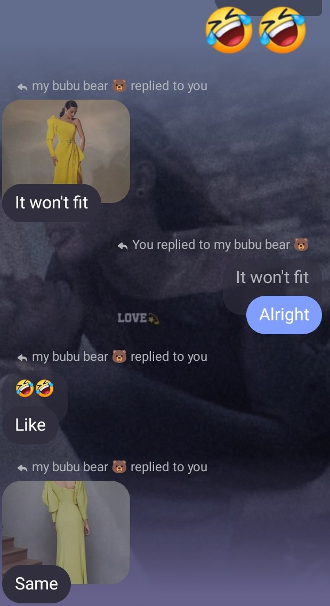
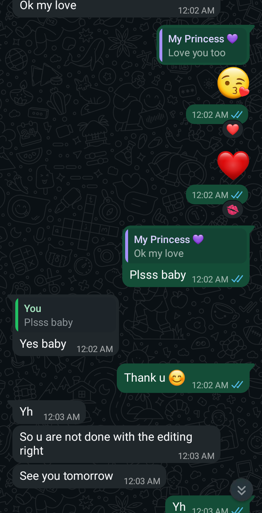
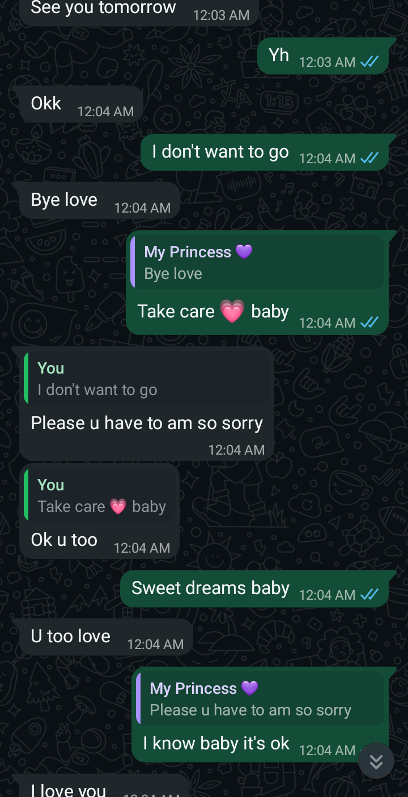
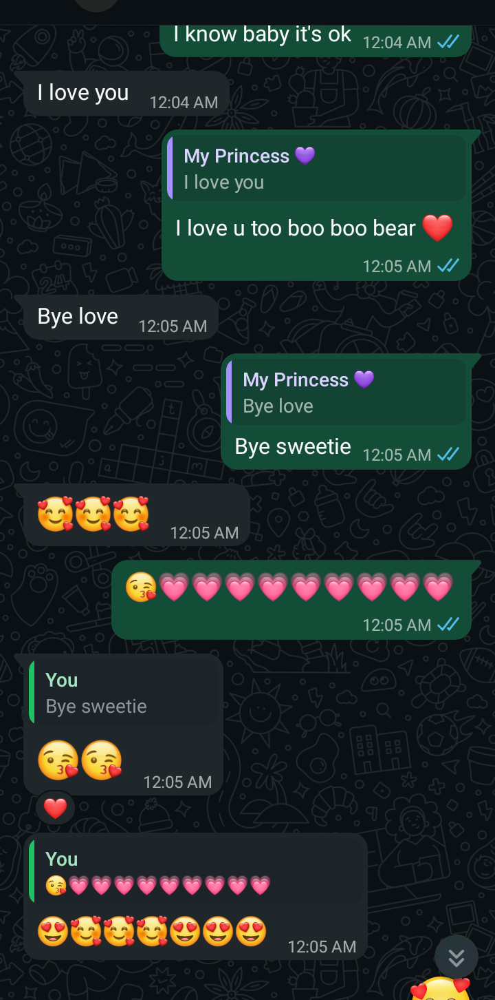
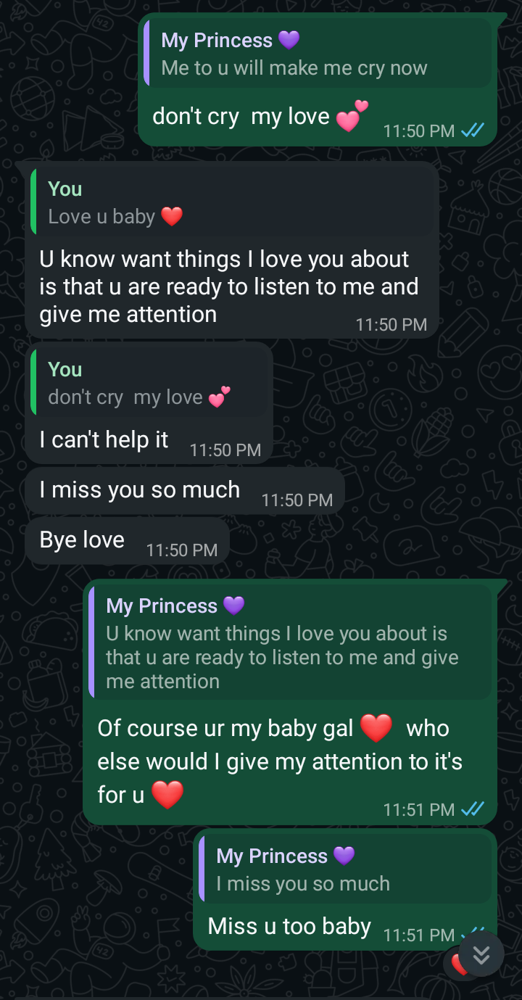
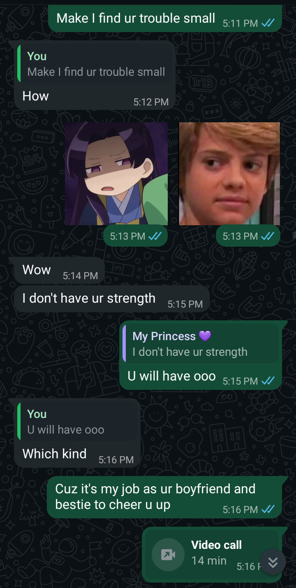
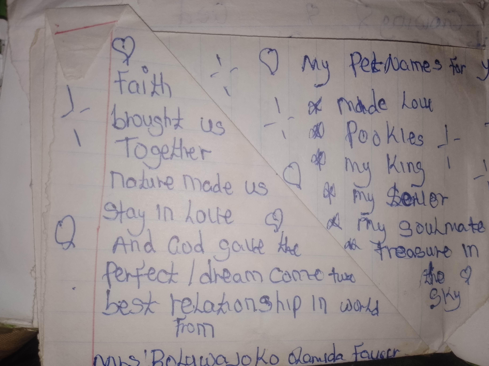

Can't belive it has been 2 yrs alread since that day i know we didn't start ur normal couple would especally when it was in an exam i remember i was kind of surprized cuz we don't talk like that even though it was cuz debi was calling me i never knew we would end up being together i was so happy when u told me u liked me and i was even more happy when u said yes to being my girl like even after we didn't talk for a while then the indepence day ohh depence day its funny and actuall am kind of embaraced cuz honestly i transfered agrression on u even when u were not the one that made me anger and am still sorry for that my angel so after sometime i started talking to u first to appologize then i was curious about u
i remember when we started talking and getting to know each other i was so happy i was so curious about u and i wanted to know everything about u even the things that u didn't want to tell me i was so happy when u told me ur secrets and i felt so special that u trusted me with ur secrets we knew learnt each other likes and dislikes our fav food and our fav color i can never forget those days how we would compet who would finsh the note first we would talk for hours and before and after that exam i collected ur num and like that december wheni traveled that we talked like a lot and befor i knew it i was attached omo like after a while i started telling u more personal stuff we hung out a lot more yh which attracted the attention of my firends before i know it we became very close like they started asking me if i liked u by that time ba i did but was tryiing to keep it a secret didnt want them know u know till i tell u how i felt turns out i wasn't convicing as time went by i started to notice if u had a boyfriend at that time but i wasn't going to be dirct at that time i wasvery scard that someone would steal u away from me like omo like in class i would be staring at u when u looked my way i would turn like i was scard of telling u and u teling me that u had a boyfriend omo sha i tried to take my mind off it but well that didn't work event that time i would play ball i would use style to check if u were ther watching i would catch myself and focus on the game funny right even when break was over i would look at the door to check if u have come inside omo so and i was being very nice hoping u would notice omo cuz that time debi asked me and i was like yep soooo eventually the guys knew and omo no wait ade knew cuz he was watching me the kingssley like honestly he was like he knew am like huh bro he was ike its obvious they aske dwheni was going to ask u out i said after we finsihed waec but to my surpise fath had something to say about it omo i was like omo i was so scard and nervous but omo i was happy that he was happy for me and he was like good luck and i was like omo i need to be brave and ask u out but
As u can alread guess this is when favour asked me a question that was like its now or ever fuck the fer then we started planning as u know ba it was ment to be a ring but well things didn't go as planned but still so wheni told them they were like finally amlike are u serious they were like good luck like i had played it cool but omo i was so scard and nervous like omo i was so scard of rejection like i playyed it in my head only God knows how many times i played it in my head and whenit came and i saw u in that dress i was like wooooowoooow like u were beautiful i was trying to calm my mind like i wasn't focusing on class that day like i was thinking of how it would go then it came i can rember it i sat besides u wished u happy birthday then held ur hand and asked u if u would be my girl and u said yes omo i was so happy i was like omo i would have jumped up honesty like serous i couldn't believe it i was so happy and i was like omo i have a girlfriend
THE JOURNEY SO FAR😘🥰
Honestly it felt like ur my first love a remember staring at u ,u are my world like if home was a person a it would be u we made a lot of memories honestly a lot changed cuz i didn't see u as a crush u were my baby like my baby gal i wante to make u happy being as romanic as possible i had the idea of reading romance books(i really put though into it cuz i didn't want it to be like my former relationship )luckly for me we had animes that showed that kind of stuff in details like seriously i learnt alot i hated seeing u upset worst whenits me that cuzed it . i love a lot about u from ur beautiful smile to the way u act when ur happy to ur sturdoness to how u relate to ur friends to me ur just right cuz even me tooam sturdon too and am grateful for all the memories we shared i love all those memories one of those memories were the times were break time when we would have our cuddle time when u would rest on my chest or i would lay on ur lap , even those our letters i still have a handful of them and even times we weren't physically togther.Honestly i don't know what to say like its really been a journy like how we've grown together and the memories we've made even with all the challenges that we have faced togther i really want to tell u for ur patience the thought of u makes me smile and i hope that this day brings u as much happiness as u have brought into my life like i can't wait to see u and hold u in my arms and tell u how much i love u and how much u mean to me and i will always be here for u no matter what even from over here am alway rooting for u Honestly its always a blast with u even with my sturboness even with that ur hear it makes me think sometimes how lucky i am and i know am not exactly a straight forward guy and u being one the diff is what makes this bond diff cuz when am thinking fantacy ur there to keep me grounded and when its the reverse am always there to do the same even when its loud i understand life can be very loaud and u want it to stop am here(no seriouly even whenits in the moment or after when u remeber i will always listen to u ur my angel) Speaking off they were a lot of crazy momnets that makes me reallllllly miss u more than ususall like seriously forst and would always be our first kiss like seriouly when i think about it i smile cuz am like wowow and i know u were surpised(yh cuz u have told me ) like at that moment i was like kiss her damn it again i was like nooo not yet then i was like man fuck that then did it omo and when u responded i was like awwwn my head was bigging another one was during our class party when u and favour went to crystal class in ss3 to go see what they were doing that silas was like someone was rooking u and i was like na i trust u won't do that and when u saw him ther and u sat on my leg and cuddled me i was very happy seeing his face was funny , even that time we did race on first to finsh that when u saw i was winning u would carry my pen theni would carry ur book another is when we were in that class that was facing the scholl shope that it was ment to be meditation thenu kept ur hea down and i made that ring out of that iron then came up with one sweet lines like that anyways there ae more from the time we offically announced we were dating when they invited us for that party that theya sked me to kiss my crush when i kissed u in front of the whole class and we left oh yh that was the day u gave me a lap dance like damn i was just watching how u were moving omoooooooooooooooooooooo even when i went home this time and how u put ur hand around my neck how u rest on my chest as we were watching that sibe ooommo i low key love it when u do that honestly same way u love cuddles and hugs from behind When u fight or argue it feels like the end of the world i really don't like to see u hurt i know i can be a worrysome person when u get hurt and somehow u coem with the solution not to tell me and am like ayyyyyeeee yoooo hold up
Omo that day was like a research hunt it was funny especally when we say th on ai did like we were like what the hell is this


AND NOW UR HALL OF CHATS😂💖







🫶Today is a very specal day for us not only cuz a wonderful person was born today but also was the start of this our beautiful relationship i can still remember how happy i was when u told me u yess the joy i felt when u would call me baby even now those memories are carved in stone in my mind
its been a wonderful journy honestly from all our fights to our disagree ments to our laught to times when we hurt each other ,i want to specally thank u for not also being my baby gal for being my angel , my home ,my surport system for all the correction and thank u for being there for me even when u have ur own problems thank u for allowing me to be imperfect eve though it can be annoying i love u soo much my angel happy birthday /anniversry here's to many more years of love and happiness together my angel i love u soo much and i hope that this day is as special as u are to me ,here is a little secret do u know people saw i act like ur my first love .am sorry for the way i sometimes act that have made u sad u mean a lot to me even thought am learning how to express my feelings better and communicate instead of keepings it to myself ,like i know i can be a little stubborn and sometimes i don't express my feelings the way i should but am learning and i hope u can be patient with me as we grow together remember i will always be here for u no matter what even from over here am alway rooting for u 💖And yess this is the suprise that i have been telling u about its smalll just to show u how memoriable these 2 years have been its may be 2yrs but i feels like an eterity
I LOOOOOOOOOVVVVVVVVVVEEEEEE U SOOOOOOOOOOOOOOO MUUUUUUCHHH MYYYYYYY ANGEL 💖
